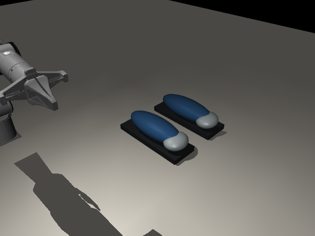
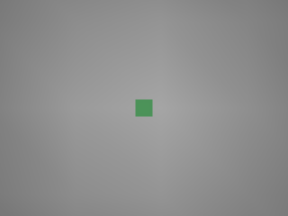
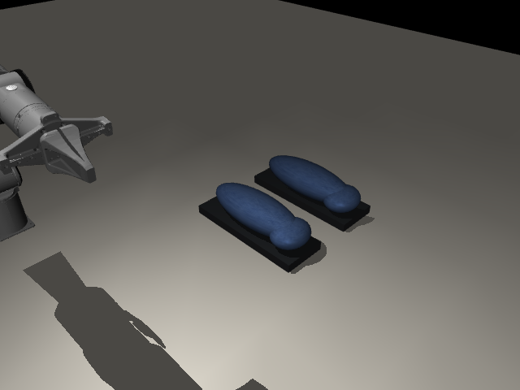
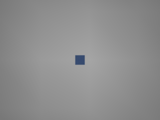
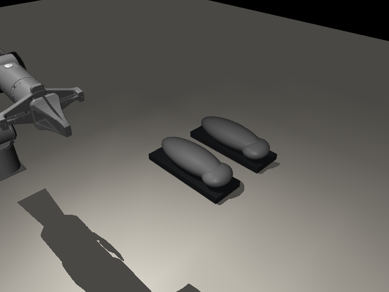
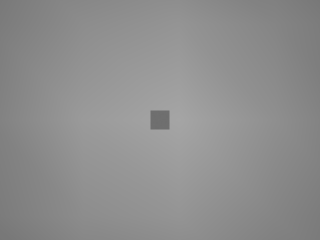
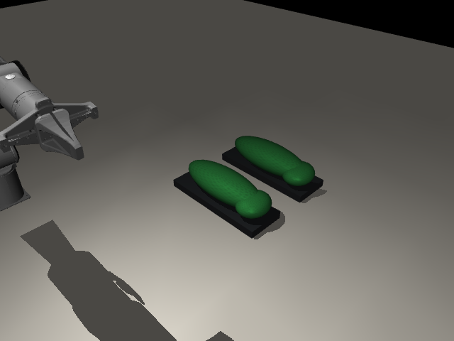
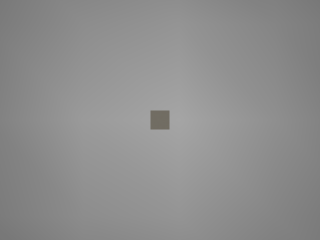
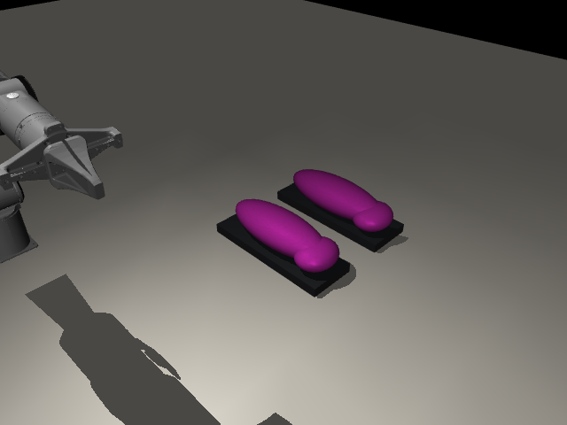
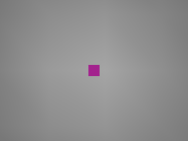

DVIDIA research · external appearance pilot
NVIDIA v0.2.0 Fabric diffuse maps are adapted to MuJoCo. Shoe geometry, mass, collision and contact remain our original rigid assumptions. No new motor policy or calibrated fabric physics is claimed.
6/6 cases completed; 6/6 mechanics comparisons matched; 6/6 two-second trajectories matched.
All results · Frozen protocol · File hashes. The cube panels test only whether the existing green-color rule sees a candidate.
Mechanics unchanged: True · Native trajectory identical: True · Green-proxy observer: observed


Mechanics unchanged: True · Native trajectory identical: True · Green-proxy observer: unknown


Mechanics unchanged: True · Native trajectory identical: True · Green-proxy observer: unknown


Mechanics unchanged: True · Native trajectory identical: True · Green-proxy observer: observed

Mechanics unchanged: True · Native trajectory identical: True · Green-proxy observer: unknown

Mechanics unchanged: True · Native trajectory identical: True · Green-proxy observer: unknown

